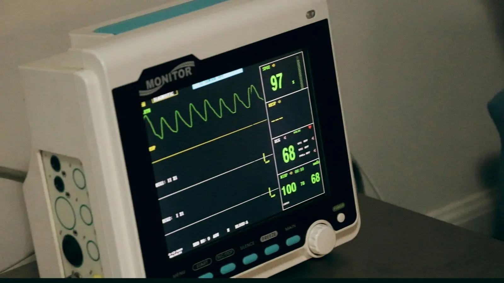

Safety & protocols
Ibogaine is powerful medicine and must be treated with absolute respect. The risks are real, specific, and — in a properly run clinical setting — systematically managed.

The risk, named plainly: ibogaine prolongs the QT interval — the heart's recharge time between beats. In vulnerable people that can trigger dangerous arrhythmias. Documented fatalities cluster around three factors: undetected heart conditions, other drugs still in the system, and settings with no medical screening or monitoring at all.
What proper screening looks like
12-lead ECG
Read by someone qualified to interpret it — before any dose, no exceptions.
Blood work
Electrolytes, liver and kidney function — the chemistry that determines how the body handles the dose.
Full disclosure
Every medication and substance, verified where possible. Screening only protects you if the inputs are true.
A clinician who can say no
History review by a licensed clinician with authority to reject. A screening process that never rejects anyone is theatre.
What proper supervision looks like
- Treatment overseen by a licensed physician, supported by nursing staff
- Continuous cardiac monitoring through the session and beyond it — the metabolite keeps working after the visions end
- IV access in place, emergency equipment on site, staff trained in resuscitation
- A realistic plan for reaching a hospital
- Protocols aligned with GITA guidelines, plus newer cardiac-protective measures such as IV magnesium (used in the 2024 Stanford study)
The one-sentence summary: the danger is concentrated where medicine is absent. Depth is only possible because safety comes first — and a provider who treats screening as a formality has already told you everything you need to know.
Next step
Choosing a provider
The 12 questions that expose whether any of the above is real.
Get the questions → OrientEligibility quiz
Two minutes, directional, honest.
Take it →Sources
- Alper et al. (2012), fatality review, J Forensic Sci · Koenig & Hilber (2015), cardiac pharmacology, Molecules
- Global Ibogaine Therapy Alliance (2015), Clinical Guidelines for Ibogaine-Assisted Detoxification
- Cherian et al. (2024), magnesium–ibogaine protocol, Nature Medicine — full analysis in our close read
Wondering if ibogaine fits your situation?
Six questions, two minutes. A straight answer, and we'll tell you honestly if it's no.